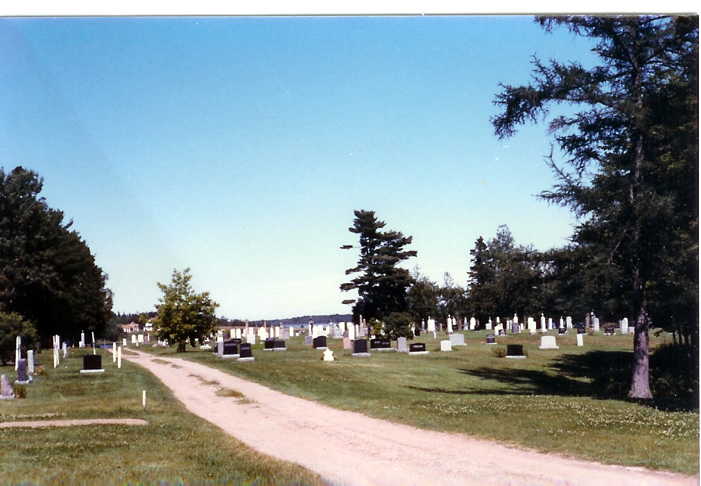
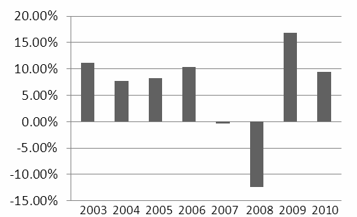

“SERVICES
FOR NON-PROFITS”

HOSTED
ORGANIZATION FUNDS
Cemetery
Funds
Dundas
Cemetery Fund
Highfield
Cemetery
Old
Protestant Burying Ground
Tryon’s
People Cemetery
Masonic
Funds
T.
Arthur Dawson Masonic
Fund
C.
Gordon Lord Scholarship
Fund
MacMillan-Bagnall
Shrine
Trust
Other
Architects
Assn. of PEI
Hospice
Association
ALS
Society of PEI
PEI
4H Trust Fund
Anonymous
#2


SERVICES
FOR
NON-PROFITS
The
Community
Foundation of Prince Edward Island
is pleased to offer a variety of services to the non-profit sector
on Prince Edward Island. A list of our hosted funds is shown to the
right.
Services
Professional
Administration of Funds –
is available through Foundation staff, a standing investment
committee and a professional investment management team
Broad
range of grant making expertise to
handle call for and receipt of applications and proposals, ,
development of criteria and selection criteria, convening of
selection committees, and administrative follow-up
Low-cost
fund management services
resulting in significant savings from including your funds as part
of a much larger investment portfolio.
Donor
Relations includes
the design of customized giving plans and granting interests,
gifts of appreciated securities and real prooperty, estate
bequests, etc.
Administration
of funds in perpetuity ensuring
both growth and care in future years.
To
take advantage of this service:
Review
Foundation documents
Meet
with us to review your circumstances and special needs
Review
documentation
Seek
authorization from your Board
Complete
customized agreement..
Investment
history since 2003.

If
you have any interest in this service, contact a Director or call us
at 902 892-3440. CFPEI is interested in discussing how your fund
would fit in.
Professional Administration of Funds – is available through Foundation staff, a standing investment committee and a professional investment management team
Broad range of grant making expertise to handle call for and receipt of applications and proposals, , development of criteria and selection criteria, convening of selection committees, and administrative follow-up
Low-cost fund management services resulting in significant savings from including your funds as part of a much larger investment portfolio.
Donor Relations includes the design of customized giving plans and granting interests, gifts of appreciated securities and real prooperty, estate bequests, etc.
Administration of funds in perpetuity ensuring both growth and care in future years.
Review Foundation documents
Meet with us to review your circumstances and special needs
Review documentation
Seek authorization from your Board
Complete customized agreement..
The
Community Foundation
of Prince Edward Island

Ten
reasons people choose community foundations.
one
We
are a local
organization
with deep roots in the community, and part of a nationwide movement
whose support we build and share.
two
We
bring donors to the table as community
builders,
working closely with them to align their philanthropic vision with
the community’s needs.
three
We
identify long-term
needs
and opportunities and invest in solutions that let our communities
guide their own future.
four
We
take a broad and inclusive view of what a community is, and provide
grants
to the widest possible range of organizations and initiatives.
five
We
provide highly personal
and flexible service,
accepting a wide variety of assets and offering donors maximum tax
advantage.
six
We
build permanent
funds
and those that can respond to immediate needs, helping our
communities ensure vital futures.
seven
We
multiply
the impact
of gift dollars by pooling them with other gifts.
eight
We
believe that diversity is strength, so we bring
the entire community together
to stimulate new ideas, build participation and strengthen community
philanthropy.
nine
We
are transparent
and reputable stewards
of community resources, committed to being accountable, accessible
and responsive.
ten
We
build community
vitality
– the unique and essential spirit that flourishes when people
believe their community holds possibilities for everyone.
THE
FOUNDATION
The
Community Foundation of PEI is a volunteer driven, registered,
non-profit, charitable organization. Our mission is to improve
quality of life on PEI through the creation and building of
endowment funds that will help ensure vital futures for Island
communities.
The
Community Foundation of PEI provides a means for individuals,
families, community groups, corporations, and private foundations to
support philanthropic activities which invest in sustainable
solutions to community needs. We connect people who care with causes
that matter.
The
Community Foundation of PEI honours the vision and wisdom of donors
and guides disbursements according to their wishes. We facilitate
and simplify donor-directed giving and help establish endowments in
perpetuity.
We
manage trust funds with diligence and transparency and adhere to
conventional reporting practices.
THE
BOARD
Direction
is provided by a 12 person, volunteer, community minded Board of
Directors representing a broad cross-section of life on Prince
Edward Island. Much of the success of the Foundation can be
attributed to the hard work and generosity of the individual
directors.
CURRENT
DIRECTORS
John
Robinson Tom Davies Joyce Gaudet
Tracey
Laughlin James Travers Rod Nicholson
Donald
Glendenning Andrew Daggett Stanley MacDonald
Rogers
Bell Steve McQuaid Carol Fraser
RECENT
ACHIEVEMENTS
Annual
granting of more than $60,000 to charitable organizations and
causes
Investment
portfolio over $1,500,000
Developed
a network of Summer Islanders interested in giving back to their
adopted home;
Capacity
building and leadership workshops for the charitable sector
Led
an $800,000 project to help arts and heritage organizations gain
long term stability
Receipts
acceptable to IRS for US citizens
I
am impressed with the ability of the Foundation
to design funds that reflect both
donor interests and
community
needs – Dr. Thomas Hall
The
Community Foundation of Prince Edward Island
Suite
105, Queen Square Center, 119 Queen Street
Charlottetown,
PE CIA 4B3
Telephone:
(902) 892-3440; Fax: (902) 892-0880
Email:
cfpei@pei.aibn.com
Web
site: www.cfpei.ca
Registration:
Canada: 890011190 RR0001 USA: 30-0050801
05 2011-04-01 Cemetery
Funds
of Prince Edward Island
Annual granting of more than $60,000 to charitable organizations and causes
Investment portfolio over $1,500,000
Developed a network of Summer Islanders interested in giving back to their adopted home;
Capacity building and leadership workshops for the charitable sector
Led an $800,000 project to help arts and heritage organizations gain long term stability
Receipts acceptable to IRS for US citizens